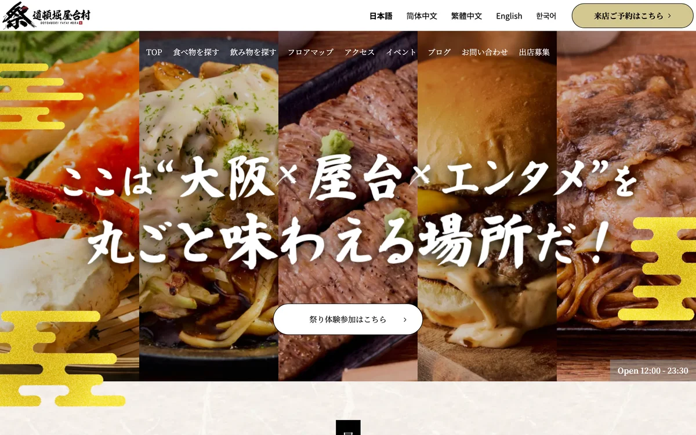
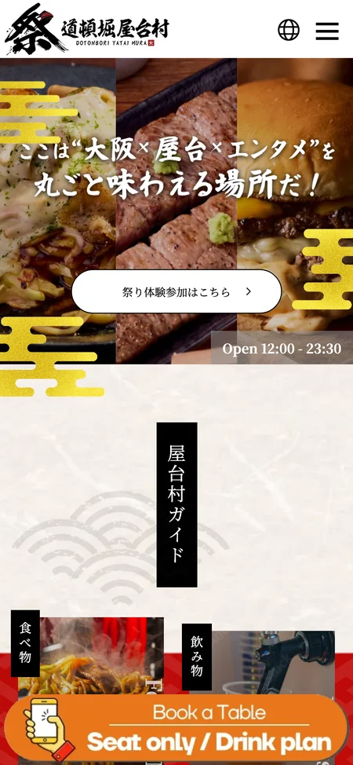

サイトを直したら、
予約が120%増えた。
メニューも、営業時間も、地図も載っていました。きれいなサイトでした。 それでも人が来なかった理由は、たったひとつです。 「なぜ、ここに行くのか」が書いていなかった。

何が起きていたか
このお店だけの話ではありません。同じことが、だいたいどこでも起きています。
- 01 / Problem問題
情報は全部そろっていた。メニュー、値段、営業時間、行き方。 なのに「ここに行こう」と思う理由が、どこにも無かった。
- 02 / Answer結論
人が来るのは、料理がおいしいからではなかった。 人との距離が近いからだった。それがサイトに1文字も出ていなかった。
- 03 / Why Us木下スタジオなら
見た目をきれいにする前に、現場を見て「お客さんが本当は何を買っているか」を探します。 そこがズレたままだと、何回作り直しても同じです。
- 04 / Goalゴール
「食べに行く場所」から「祭りに行く場所」へ。 言い方を変えただけに見えて、来る人も、来る理由も変わりました。
どんなお店か
大阪・道頓堀川沿いの屋台村です。串カツ、海鮮、お好み焼き——屋台がずらりと並びます。
- Place道頓堀川のすぐそば
大阪でいちばん人が歩く場所。立地は申し分ありませんでした。
- Entry入場は無料
毎日やっていて、ふらっと入れる。条件はそろっていました。
- Guest観光の人・地元の人・海外の人
3種類の客層。けれど誰に向けて書くかが決まっていませんでした。
- Siteサイトはすでにあった
作り直しではなく、何を伝えるかからやり直した仕事です。
現場で分かったこと
お店に行って、座って、まわりを見ていて気づきました。
- 01 / Why料理ではなかった同じ串カツは、他でも食べられます。それでもここに来る理由が別にありました。
- 02 / Distance人との距離が近い隣の人と話す。店主と話す。レストランでは起きないことが、屋台では起きていました。
- 03 / Air祭りの空気夜、水辺、赤い提灯、がやがやした音。これが屋台体験を完成させていました。
- 04 / Gapここがズレていた届けたいのは「祭りの空気」。届いていたのは「飲食店のデータ」。この差が、来ない理由でした。
やったこと
大がかりなことはしていません。4つだけです。
- 01 / Words最初の一言を変えた「食べられます」から「祭りに来ませんか」へ。1画面目で、来る理由が伝わる形にしました。
- 02 / Color赤い提灯と夜の色で組み直した明るく清潔な配色をやめました。暗くて、暖かくて、少しうるさい——お店と同じ色にしました。
- 03 / Order並べる順番を変えたメニュー一覧の前に「どう楽しむか」を置きました。順番を変えるだけで、読む人の気持ちが変わります。
- 04 / Language5つの言葉に対応した日本語・英語・中国語（2種）・韓国語。海外から来る人が、迷わず入れるようにしました。

予約が120%に。
見た目を整えただけでは、こうなりません。
どこで人が迷って離れているかを見つけて、そこを直したからです。
うちでも、できますか
できます。お店の大きさは関係ありません。やることは同じです。
- 01 / Askまず聞きます
お客さんが何を言って帰るか、どこで迷っているか。社長が一番よく知っています。
- 02 / Findズレを探します
伝えたいことと、伝わっていることの差。ここが見つかれば、直すところは1つか2つです。
- 03 / Fixそこだけ直します
全部作り直す必要はありません。1ページだけで足りることもあります。
- 04 / Cost1ページ 19,800円から（税抜）
小さく始めて、効いたら広げる。そのほうが失敗しません。
もっと詳しい設計の話
このページは「何をして、どうなったか」だけを書きました。 実際には、どんな人が来るかの整理（ペルソナ）、何を作って何を作らないかの決め方、 お客さんがたどる道すじの地図まで、ひと通り作っています。 その進め方そのものを知りたい方は、本体サイトにすべて置いてあります。
今のサイトのURLを、
そのまま送ってください。
どこがズレているか、見てお伝えします。見るだけなら無料です。返事は24時間以内。